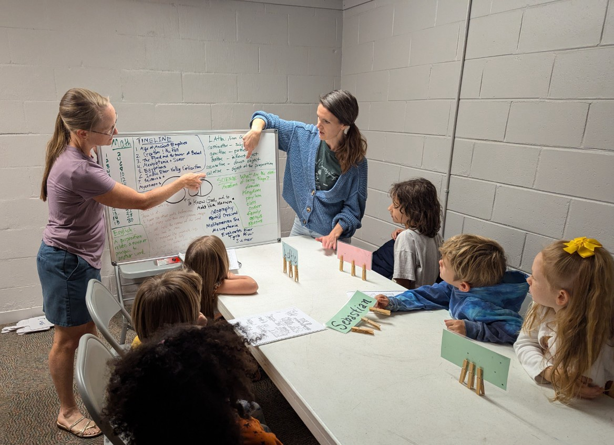

Classical Conversations of Powhatan
Growing Kids with Roots
If you want to go fast, go alone. If you want to go far, go together.– Proverb
Are you looking for a homeschooling community that offers a rigorous, yet flexible, education for your child?
Join Classical Conversations of Powhatan.

We’re a local chapter of Classical Conversations that is dedicated to serving families in the rural counties west of Richmond, VA.
Why Classical Conversations?
- A Proven Approach: The classical curriculum is designed to foster critical thinking, effective communication, and a lifelong love of learning.
- A Supportive Community: Classical Conversations of Powhatan strives to be a warm and encouraging community for both parents and children.
- A Flexible Format: You are your child’s teacher so you can customize your homeschooling experience to fit your family’s needs.
- Christian: We provide community and educational opportunities in line with Christian faith and values. We also actively learn Scripture together each year.
We believe in the power of a classical, Christian education to nurture rooted and well-rounded individuals who aren’t easily swayed by whatever cultural trend is currently in vogue.
Whether you’re a seasoned homeschooler or just starting out, we’re here to help. Let’s work together to provide your child with a truly exceptional education.
What they’re saying
TESTIMONIALS HERE
Programs
We meet for Community Day once a week.
- Foundations: Ages 4-12
- Essentials: Ages 9-12
- Challenge A: Ages 12+ (7th grade)
- Challenge B (Coming Fall 2025) : Ages 13+ (8th grade)
Ready to learn more?
To talk to someone about joining Click here or scan this QR: